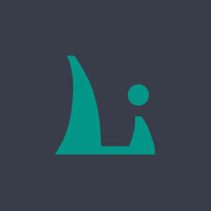

访问量
周
9,999,666
总计访问量
88万
一个标准的按钮
一个可跳转的按钮
禁用按钮
藏青导航
产品
大数据
解决方案
移动模块
后台模版
电商平台
社区
姓名
电话
辅助文字
邮箱
选择框
北京
上海
广州
深圳
杭州
复选框
开关
单选框
文本域
立即提交
重置
网站设置
用户管理
权限分配
商品管理
订单管理
1. 高度默认自适应，也可以随意固宽。
2. Tab进行了响应式处理，所以无需担心数量多少。
内容2
内容3
内容4
内容5
网站设置
用户管理
权限分配
商品管理
订单管理
内容不一样是要有，因为你可以监听tab事件（阅读下文档就是了）
内容2
内容3
内容4
内容5
网站设置
用户管理
权限分配
商品管理
订单管理
默认宽度是相对于父元素100%适应的，你也可以固定宽度。
2
3
4
5
6
条目1
条目2
条目3
条目4
条目5
多窗口模式，层叠置顶
配置一个透明的询问框
示范一个公告层
上弹出
右弹出
下弹出
左弹出
左上弹出
左下弹出
右上弹出
右下弹出
居中弹出
提示层
查看 
查看
占位
占位
占位
占位
占位
占位
占位
占位
占位